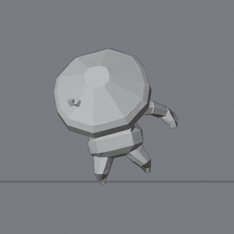
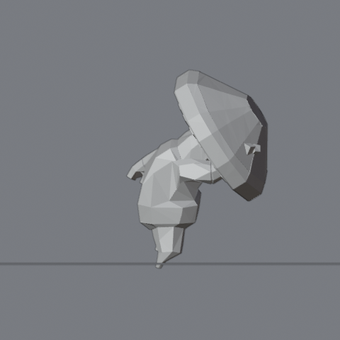
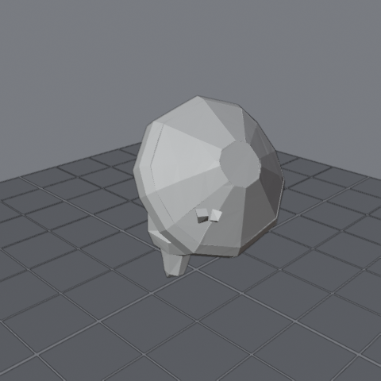
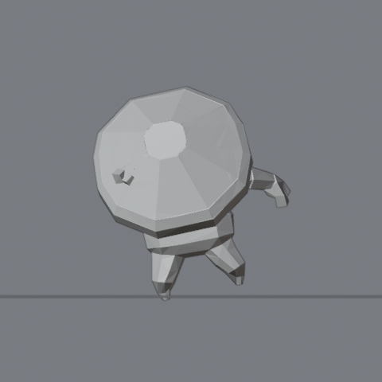
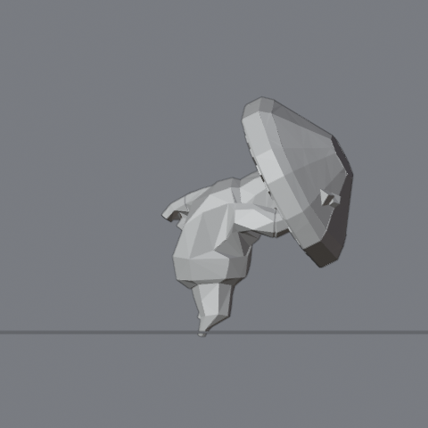
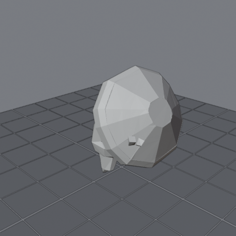
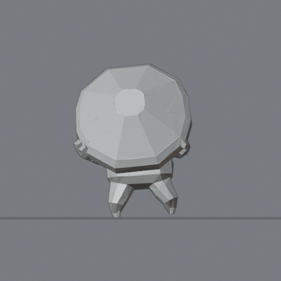
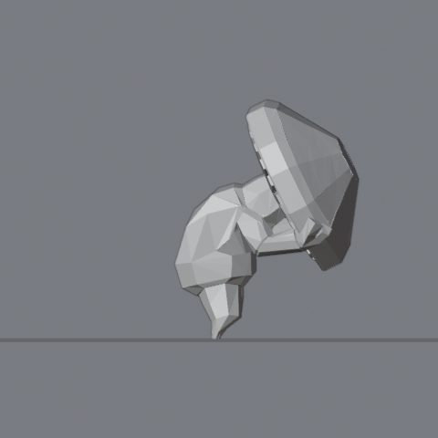
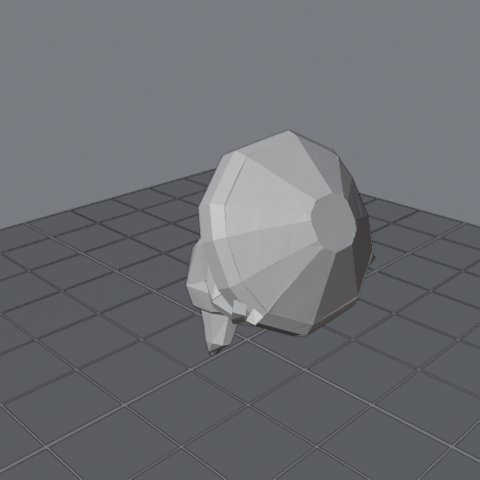

front solid g1
front solid g1 side_nX solid g1
side_nX solid g1 q3 solid g1
q3 solid g1
front solid g6
side_nX solid g6
q3 solid g6
front solid g14
side_nX solid g14
q3 solid g14
front solid g24
side_nX solid g24
q3 solid g24